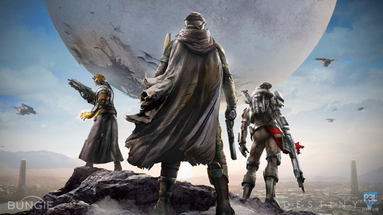
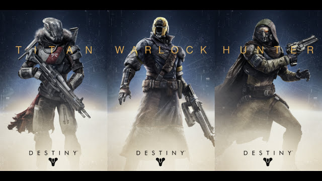

L'histoire de Destiny prend place dans le futur, au sein d'un environnement post-apocalyptique. Il y a 700 ans de cela, le Voyageur (sphère ayant des pouvoirs surnaturels) arriva sur Terre. Il apporta avec lui toutes ses connaissances, permit aux humains de vivre trois fois plus longtemps, il fit pleuvoir sur Mars et Vénus: Mercure devint fertile, les humains voyagèrent alors dans l'espace pour découvrir d'autres systèmes solaires. Mais le voyageur avait un ennemi, un ennemi qui l'avait retrouvé et voulait la destruction de ses nouveaux protégés, ce fut la fin de l'âge d'or. Les humains construisirent une cité, la dernière sur Terre. Les gardiens ont cru réussir à contenir leur ennemi (appelé les ténèbres). Elles agrandissaient leur nombre et leur force pour pouvoir attaquer une seconde fois. Un jour, un spectre, sorte de cube volant qui guide les gardiens dans leur périple, trouva un gardien qui avait la capacité, la volonté, et le courage d'affronter les ténèbres et si ce dernier échouait, ce sera la fin du monde tel qu'on le connait.
Une fois votre gardiens créé vous allez devoir combattre des hordes d'aliens sur différentes planètes du système solaires. au fur et à mesure de vos combats vous gagnerez en experiences et ainsi monté votre niveau. Vous aurez alors accés à des armures et armes plus puissantes.
